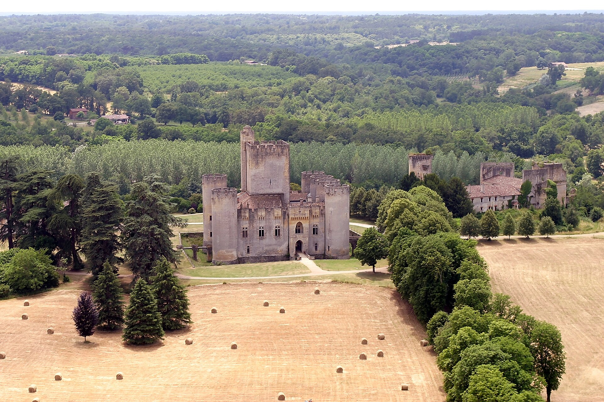
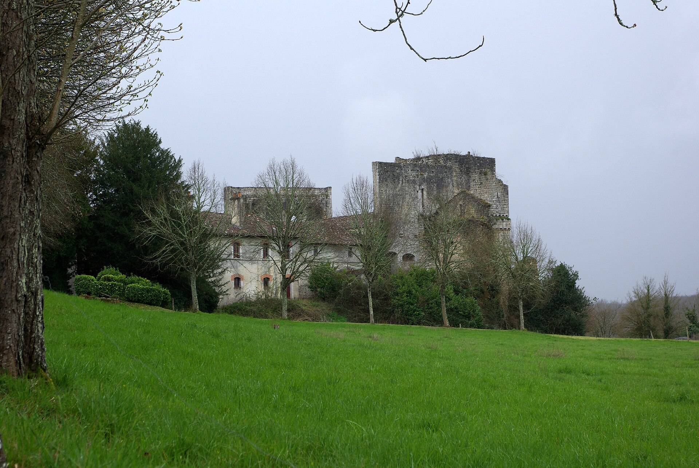
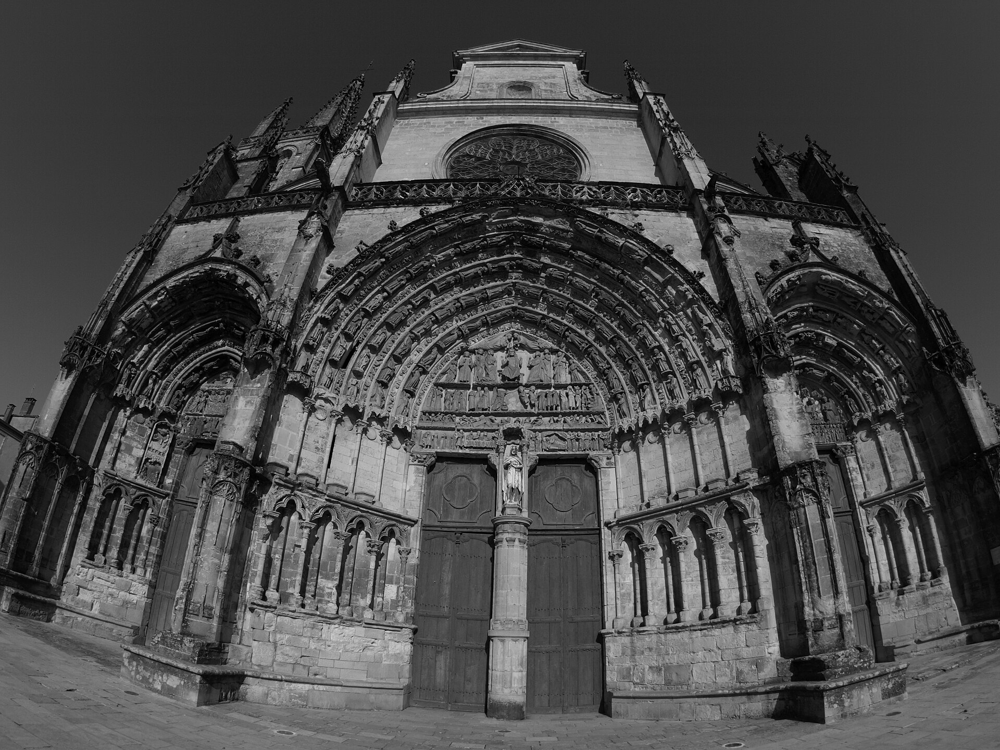
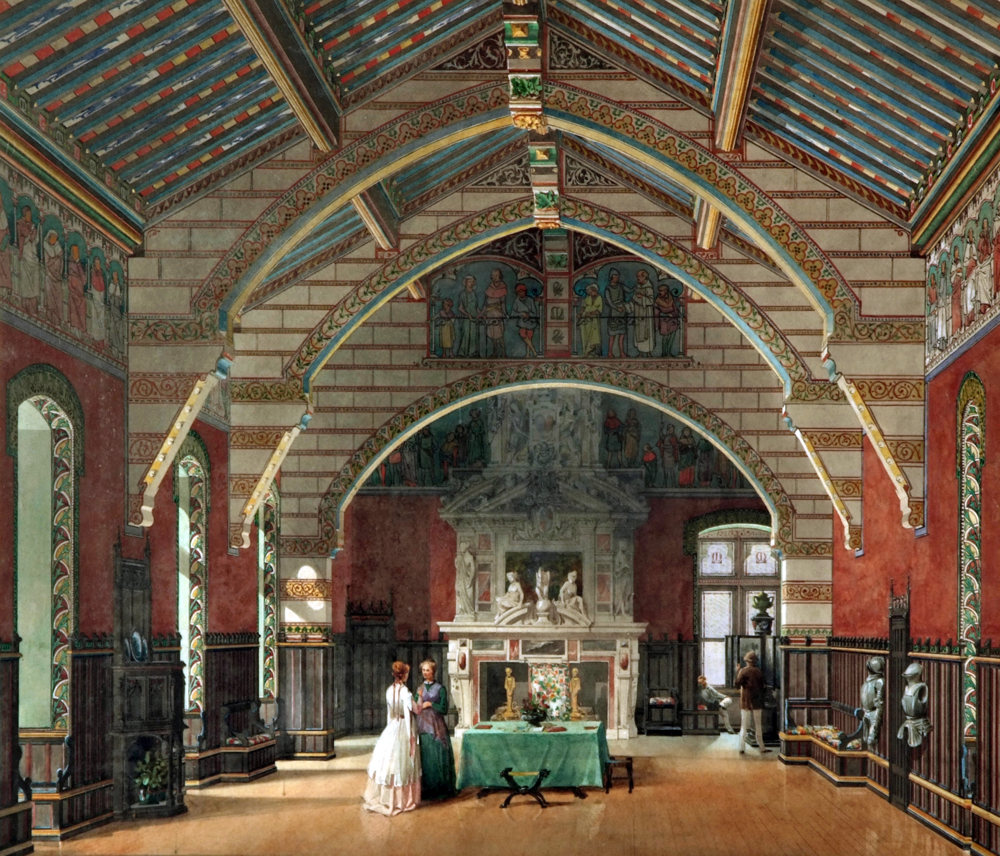
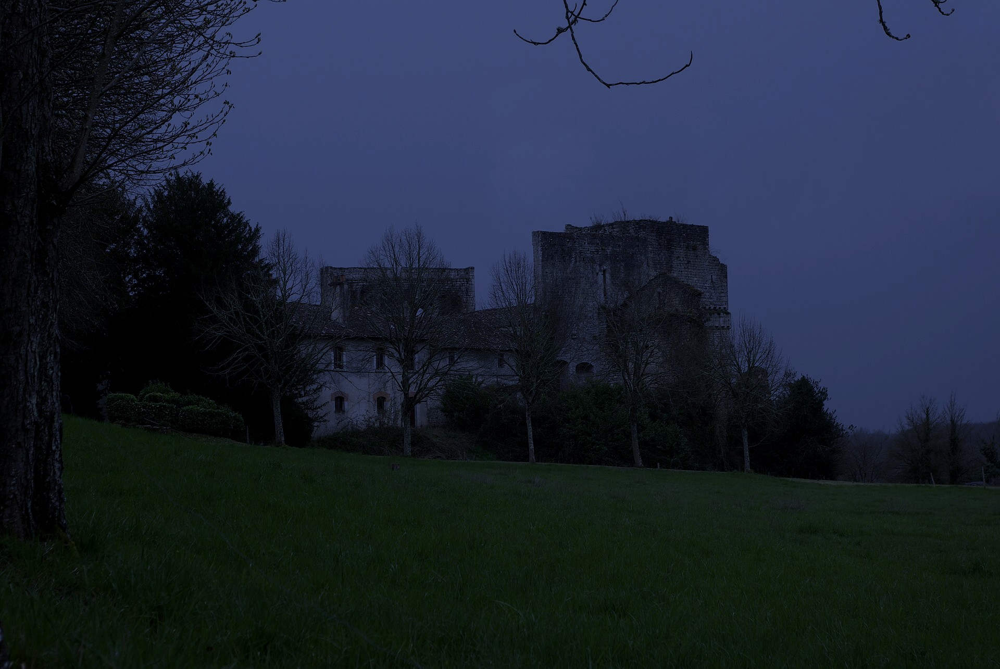
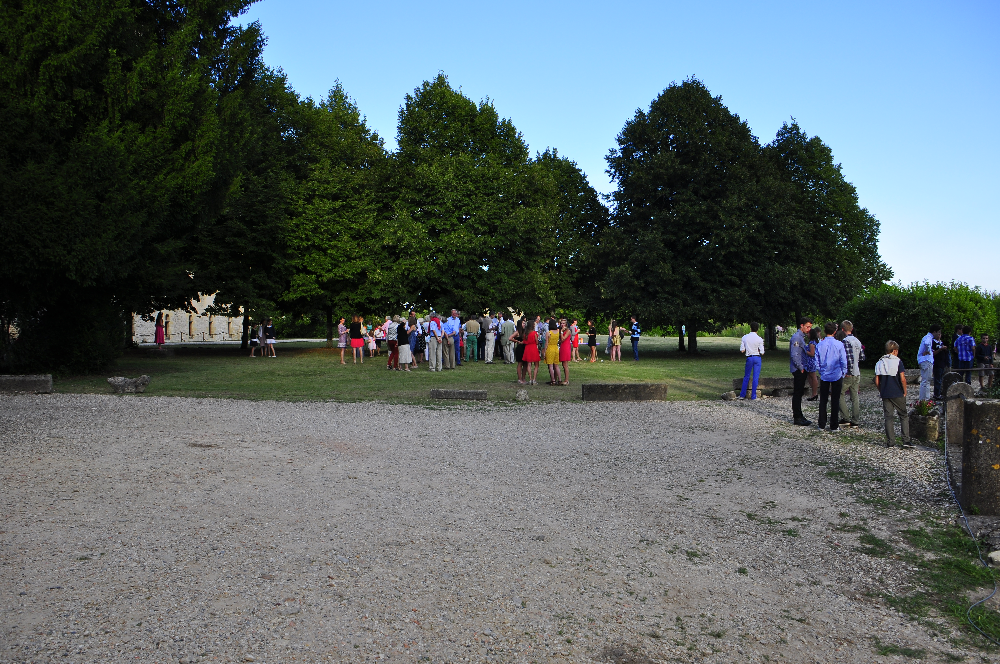

Chèque ou espèces vivement recommandés.
La carte bancaire est acceptée mais le réseau bancaire au château est très faible et souvent instable. Prévoyez de l'argent liquide pour entrer sans attente !
Chiens interdits dans le parc et le château, à l'exception unique des petits chiens portés dans les bras ou en sac pendant toute la durée de la visite.
Vous pouvez pique-niquer librement dans le parc arboré du château aux heures d'ouverture (dès 14h30) en respectant la propreté de la zone protégée Natura 2000.
Pas besoin de réserver ni d'appeler pour les visiteurs individuels : venez directement sur place. Visites guidées tous les jours à 15h et 16h (parc ouvert dès 14h30).
Le billet comprend : La visite guidée des appartements, la chapelle, la cuisine historique et l'accès au parc (pique-nique autorisé).





Grâce aux visites, des travaux d'envergure sont menés en continu : toitures, vitraux et création des plafonds peints de la salle synodale (inachevée au XIXᵉ siècle par Viollet-le-Duc). Vous pouvez soutenir la sauvegarde du château via la Fondation de France.

Le parc et le château vieux sont des lieux idéals pour recevoir vos invités dans un décor authentique et préservé.
33210 Mazères (Gironde) • À 10 min de Langon (A62)
05.56.76.14.16
• Particuliers : sans réservation aux horaires de visite.
• Groupes & scolaires : sur rendez-vous toute l'année.
• Guinguette L'Ostrea (Métairie) : 06.38.46.71.57.